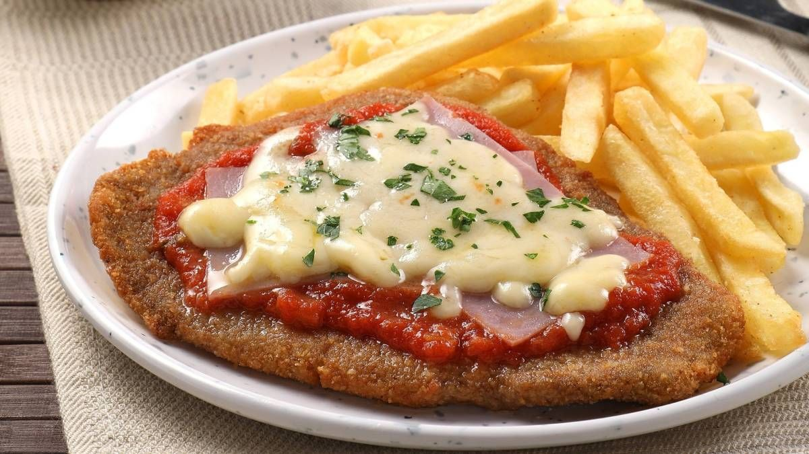

Home
Milanesa a la Napolitana

Description
A classic Argentine dish: a breaded and fried beef cutlet topped with tomato sauce, ham and melted mozzarella.
It is usually served with french fries or mashed potatoes and is a staple of family lunches.
Ingredients
- 4 thin beef cutlets (peceto or nalga)
- 2 eggs
- 1 cup of breadcrumbs
- 1 garlic clove, minced
- Chopped parsley
- Salt and pepper
- Oil for frying
- 1 cup of tomato sauce
- 4 slices of ham
- 4 slices of mozzarella
- Dried oregano
Steps
- Beat the eggs with the garlic, parsley, salt and pepper.
- Dip each cutlet in the egg mixture.
- Coat both sides with breadcrumbs, pressing firmly.
- Fry the cutlets in hot oil until golden on both sides.
- Place them on a baking tray and top each with tomato sauce, a slice of ham and a slice of mozzarella.
- Sprinkle with oregano and bake at 200 °C for 10 minutes, until the cheese melts.
- Serve hot with french fries or mashed potatoes.